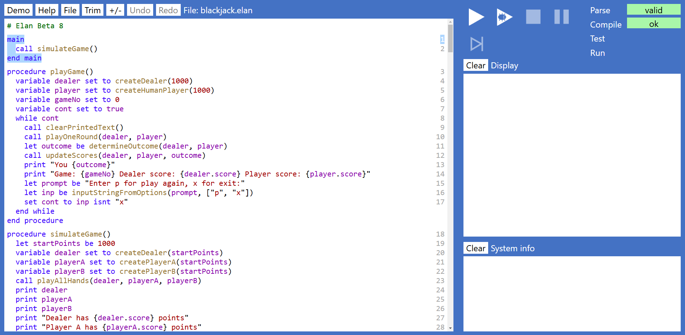
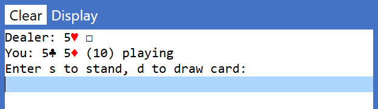

Blackjack
In this exercise you will:
- Play a few hands of the card-game Blackjack (also known as 'twenty-one') learning:
- How to load, run, and stop an existing Elan program.
- The rules of Blackjack and how it is played and some of the important terminology such as 'draw', 'stand', 'bust', 'soft-ace', and 'dealer face-card'.
- Explore the code for the ready-made Elan Blackjack program, learning:
- How to navigate (move around) the code in the program.
- That a program is made up from instructions.
- How one instruction may be made up from a sequence of other instructions.
- How to recognise a few common instructions, and what they do.
- Make small modifications to the program, learning:
- How to edit an existing instruction, include the difference between the 'templated' parts of an instruction,
which you cannot modify, and the 'fields' within an instruction which you can modify.
- How to ensure that any changes/additions that you make are saved to a file, so that you can retrieve them again.
- The program development cycle: write, run, test, refine.
- Write new code to create fully-automated Blackjack players that implement different strategies, learning:
- How to implement two different, but minimal automated player strategies.
- How to run a single simulated hand of Blackjack for the Dealer, and both your automated players.
- How to run the same simulation 10,000 times and compare how each player, and the Dealer, have scored (known as 'looping' or 'iteration')
- How to add a 'decision' into a strategy, by using a 'condition' or 'selection'.
- How to refine an automated player's decision to make proper use of a 'soft ace'.
- How to determine whether the dealer's face card makes a difference, by analysing how often the Dealer goes bust from different face cards.
- How to refine the player's strategy to make best use of this information.
Play a few hands of Blackjack using a ready-made Elan program
Before you start this exercise, your teacher should have advised you:
- Where to access Elan (it might be via the public web, or locally from a school server).
- Where you can access the ready made Blackjack program.
Load and Run the program
From the Elan page, select File then Load and use the file-selector dialog to find the file Blackjack.elan.
Your screen should then look something like this (the text might be slighlty different due to version changes):

Note the following:
- The System info pane at the bottom-right should be empty. If it contains an error message at this stage it
means that the program was not loaded successfully and you will need to ask your teacher for help.
- The large pane on the left hand side of the screen shows the program code.
You will be learning how to read, modify and extend this code in later sections.
But you don't need to be able to understand any of it to run and use the Blackjack program.
- At the top right you can see the status bar, which should show that the Parse status
is 'valid',
and that the Compile status is 'ok'. Both have a green background, to reinforce the message that this
is the desired status. (If you have difficulty seeing the colours referred to, ask your teacher,
who can set up a different colour profile for you, both for the Elan tool, and for this documentation).
Assuming everything is as described above you will now be able to run the program. Click on the Run button - the triangular icon shown
at the top of the screen.
(Note that the button next to it looks similar but with a 'bug' inside it. You will learn about how to use that later.
If you pressed this button it would also run the program, but it may run slower because it is having to do more work. So always
run with the plain Run button until you understand how and when to use Debug.)
Upon running notice that:
- The main code pane now has a tint, indicating that it is 'disabled': you can not alter it while the program is running.
- The Run button is disabled, but the Stop button is enabled. You can stop the program at any point, and run it again from the start.
- The Display pane will now contain some information generated by the program something like the following - though since the game uses a shuffled deck
the actual card values will differ each run.

Understanding Blackjack
In the program you are the only player, playing against the dealer. Each of you has been dealt an initial 'hand' of two cards.
You can see both of your own cards and you can also see one of the dealer's two cards, known as the dealer's 'face card'.
Alongside your hand you can see the total value of the hand. Note that:
- Number cards (two to ten) have their obvious value.
- Royal cards (Jack, Queen, King) each has the value of 10.
- If your hand includes an Ace, this will initially be valued at 11.
- The program is offering you the option to 'stand' (take no more cards) or to 'draw' (be dealt another card). The pale blue bar
indicates that it is expecting you to type a response - either s or d.
- Your aim is to get the total value of the hand as close to 21 as you dare.
However, if you draw a card and that card takes the total value over 21 then your hand will be 'bust' and you cannot continue.
The exception is that if your hand has an Ace valued at 11, it will automatically be de-valued to 1, so you will not then be bust.
- At each point that you are asked whether you want to stand or draw, you must weigh up the risks of going bust, against
the risk of standing, but with the dealer ending up closer to 21 than you.
- If your total hand value is exactly 21 you will not be offered the option to draw.
- If your total hand value is exactly 21 from only two cards you hold a 'Blackjack' hand, which is even better in terms
of the final outcome than having a total of 21 from more than two cards.
- In this implementation of the game, there is no limit to the number of cards you can draw up to a total of 21. (Also,
if you happen to have played Blackjack before, this version does not offer the options offered by some versions
to 'split' a hand, to 'double' your stake, or 'insurance'.)
- You will be playing first. Only when you have finished playing your hand will the dealer play out their hand, and then the outcome of the round will be determined.